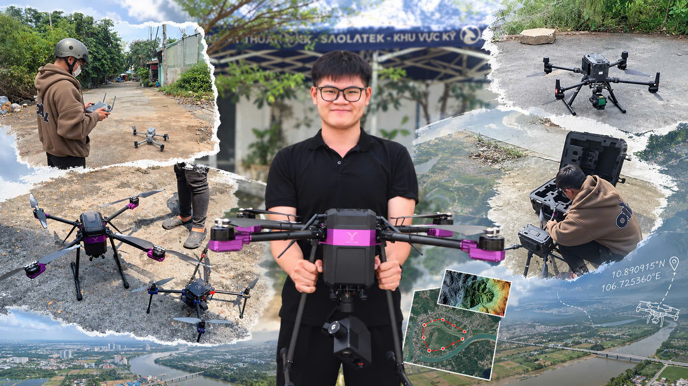

01
Assessment of multiple spatial interpolation techniques for rainfall mapping in Ho Chi Minh City
DOI: 10.1088/1755-1315/1633/1/012032
View full paperPublications
Full-text PDFs are available for each publication and proceeding below.

DOI: 10.1088/1755-1315/1633/1/012032
View full paperPublished in the conference proceedings; an ISBN has not yet been assigned.
View full paper